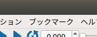

プロジェクトのブックマーク登録¶
ここでは、プロジェクトのブックマーク登録の仕方を説明します。この機能は、使用頻度の高いプロジェクトをブックマークマネージャに登録して、簡易に開けるようにするものです。
ブックマークバーの表示¶
以下の手順で「ブックマークバー」を表示します。
「メニュー」-「表示」-「ツールバーの表示」-「ブックマークバー」を選択する。
下図は、ブックマークバーのツールバーです。
プロジェクトの登録¶
以下の手順でブックマークリストにプロジェクトを登録します。
任意のプロジェクトを開く。
ブックマークバーの「+」（プロジェクトの登録）を押す。
プロジェクトの削除¶
以下の手順でブックマークマネージャに登録されているプロジェクトを削除します。
ブックマークバーの「★」（ブックマークマネージャの表示）を押す。
ブックマークマネージャに登録されている任意のプロジェクトにマウスカーソルを合わせる。
右クリックし、表示されたポップアップメニューの「削除」を押す。または、ブックマークマネージャ右上のゴミ箱のアイコンを押す。
プロジェクトを開く¶
以下の手順でブックマークマネージャに登録されているプロジェクトを開きます。
ブックマークバーの「ブックマークマネージャの表示」を押す。
ブックマークマネージャに登録されている任意のプロジェクトを押す。
ブックマークマネージャ右下の「開く(O)」を押す。